Next: 一般均衡的な効果の存在 Up: 研究法や分析法に関するメモ Previous: LOCF解析とITT分析
荘島 (編) 「計量パーソナリティ心理学」第4章
測定後の反応バイアス修正として
これらの方法で得られたデータはイプサティブデータであり，項目間に独立性を仮定することができない。
サーストンの一対比較モデルが刺激の順序付けを行うために利用されてきたが，
渡部洋「人文・社会科学の統計学」 P.312-
刺激の尺度 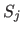 ，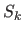 について心理学的連続体を仮定し，それぞれに対する反応 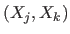 について
とする。 このとき，
となる。（ただし 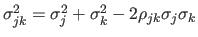 ）。
これを用いて，刺激
を
よりも好む確率は，
| 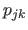 | |||
| 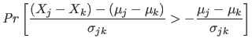 | |||
| 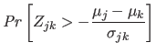 | |||
| 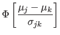 |
よって，もし が得られていれば，
と求められる。
ここで，サーストンのケースVでは，
とおく。 このとき，
となる。
「を単位とした心理学的連続体の尺度を考えれば」というのがいまいちよくわからない。

ここで，一対比較データから比較判断の法則を利用して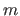 個の刺激に対する一次元尺度を構成することを考える。
ただし，以下の点に注意
荘島 (編) 「計量パーソナリティ心理学」第4章
一対比較の場合，3つの刺激A，B，Cに対して，ある被験者 の選択が
の選択が
| 被験者 | 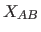 | 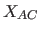 | 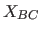 |
| 1 | 1 | 0 |
同じ刺激について順位法を行った場合，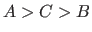 であれば，
| 被験者 | |||
| 1 | 1 | 0 |
ここで，「AとBの比較で，Aを選ぶ」ということをモデル化する。
となるとする。
このとき，
| 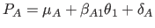 | (5.1) |
| 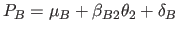 | (5.2) |
すると，反応の不整合を生む偶然誤差 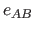 を加えて16，
となる。
すると， 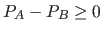 は，
| 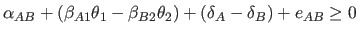 | (5.3) |
| 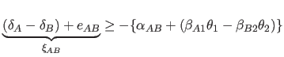 | (5.4) |
| 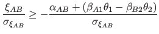 | (5.5) |
| 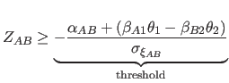 | (5.6) |
よって，
となる。 すなわち，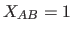 となる確率（BよりAが選ばれる確率）は，標準正規分布に従う確率変数が閾値を超える確率に等しいという正規累積モデルが成り立つ。
Taichi Okumura